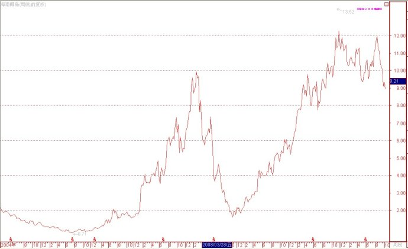
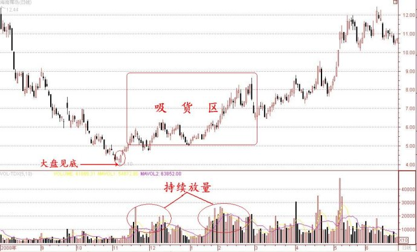
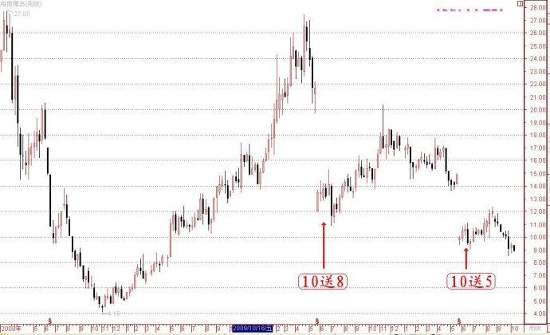

第28篇：产业资本坐庄的深度研究（12）
谷为陵
七、产业资本坐庄成败案例分析
在进行产业资本坐庄成败案例分析之前，先要明确成败的标准。我认为，所谓成功的标准，应该是产业资本不仅达到了预期目的，且没有惹出大的麻烦。产业资本坐庄最理想的结果，应该是顺势而为，其整个运作过程如行云流水，看不出斧凿痕迹，在其达成目标后，市场投资者还没有看出其操纵的本质。所谓失败的标准，应是产业资本没有达到预期目的，或虽达到预期目的，但惹出了大的麻烦。
为方便起见，我将按照产业资本庄家的类型进行相应的案例分析：
（一）与游资配合型庄家的成败案例
与游资配合型庄家的很重要目的是为了赚取公众流通股的差价收益，产业资本需要配合游资在股价底部吸货，在股价高位出货。为此，产业资本要在股价低位出利空信息，而在股价高位出利好信息，以此调控股价的涨跌。
产业资本在股价低位公告的利空信息，主要是业绩大幅下降甚至大幅亏损。股市有彦：“涨时重势，跌时重质。”在股市大跌的时候，业绩下降是股票最大的利空，此时发布业绩下降的利空，无疑是雪上加霜，定能将股价继续打压更低，且股价跌到低位后，也难以吸引大资金进驻，而这些正是产业资本期待的结果，利于与产业资本合作的游资逢低吸纳。
产业资本公告的利好信息，主要有两类：
一是“业绩暴增+高送股”，这是股市里绩优成长股的“标准利好”，往往会形成抢权或者填权的大幅上涨行情。现在有个问题，那就是高送股好说，只要具备送股能力就可以，但是，业绩暴增怎么实现，难道要造假吗？应该说，靠造假来制造业绩暴增题材的不是没有，如最近发生的紫鑫药业案件，但是，在全流通时代，产业资本一般不至于因为需要个业绩暴增题材而冒险造假，将自己的长远前途都搭进去。实际上，大多数的产业资本并不需要刻意造假，而是通过“合理合法”的业绩调控就可达到目的。业绩调控操作方法是这样的：在股市大跌的时候隐藏业绩，以打压股价，而在股市大涨的时候再释放业绩，形成业绩的叠加增长效应，促涨股价。当然，隐藏业绩的时间不能够太长，一般不超过一个会计年度。关键的问题是，绝大多数产业资本庄股并非绩优成长股，其业绩并不能持续增长，产业资本只是非常巧妙地抓住了公司业绩恰巧处于短暂增长，且股市处于一个由大跌转大涨的一个特殊时期，做足业绩调控的文章为其所用。在完成业绩的调控后，该类股票的微利股的本来面目将会逐渐露出，股价也会随着业绩的下降而回归，从而形成一轮大的涨跌循环。
二是重大利好题材，如，介入热门产业等。这类题材大部分是应景之作，纯粹为了配合炒作，其中很多题材在产业资本出货后，根本就不去兑现。当然，这样做的后果还是很严重的，因为，那些因看好利好题材而追高的投资者是不会轻易罢休的，他们会闹一闹，如最近的西藏发展事件，但是，很难闹出名堂。但不管怎么说，不兑现利好题材，还是有损上市公司的形象的，对其今后的发展并不利。
自2009年以来，与游资配合型庄家数量很多，有代表性的成功案例包括海南椰岛、苏常柴、天业股份、大元股份、西藏发展等。失败的案例包括三峡新材、万好万家、中山公用等。
1、成功的业绩暴增操纵案例之一：海南椰岛
海南椰岛是以药酒为主业的公司，是前两年的大牛股，其股价自2008年11月至2010年11月涨幅超过8倍。以下是该股的周线图（前复权）：

可以看出，该股自2007年10月至2008年11月出现暴跌，跌幅高达86%；但随后该股反转大涨，至2010年11月创出了历史新高。那么，该股巨大的上涨行情是怎样形成的呢？可以说，这完全是控股股东刻意操纵的结果，操纵的手段正是业绩调控。下面我就来分析一下该股股价是怎样通过业绩调控操纵的：
（1）业绩调控情况
让我们先看看该股自2004年至2011年中的业绩情况，见下表：
|
|
2004
年报
|
2005
年报
|
2006
年报
|
2007
年报
|
2008
年报
|
2009
年报
|
2010
年报
|
2011
中报
|
|
主营收入
（亿元）
|
12.9
|
13.4
|
13.5
|
11.3
|
11.4
|
14.7
|
16.0
|
6.0
|
|
净利润（亿元）
|
0.27
|
0.28
|
0.32
|
0.57
|
-2.4
|
1.1
|
2.0
|
0.03
|
|
每股收益
（元/股）
|
0.17
|
0.17
|
0.19
|
0.34
|
-1.44
|
0.69
|
0.66
|
0.01
|
从上表可以看出，该股的主营收入自2004年至2006年均为13亿元左右，净利润约为3000万元左右，还是比较稳定的。
但至2007年就第一次出现异常情况，该年度的主营收入只有11.3亿元，但其净利润反而增加到5700万元，利润增加的原因是主营成本下降了近3亿元。作为一个造酒的公司，主营成本一下子下降30%，这是违反常理的。我认为，该股在此期间将业绩刻意提升，是为了配合游资在牛市中的炒作。
更异常的情况出现在2008年。该年度的主营收入为11.4亿元，与2007年的11.3亿元相同，但却巨亏2.4亿元！这更让人难以理解。公司解释巨亏的理由是资产减值1.8亿元所致。我认为，该股在此期间将业绩报亏，是为了配合游资在股价底部大举吸货。
再往下看，就越来越蹊跷了。在2008年刚刚巨亏后，该公司2009年的主营收入却达到14.7亿元，净利润达到1.1亿元。2010年更是高歌猛进，主营收入却达到16亿元，净利润达到2亿元，比2009年增长一倍。但细看2010年报，却发现该年度的投资收益高达2.7亿元！原来，这2亿元净利润里面有大部分是投资收益贡献的。我认为，该股在此期间将业绩大幅提高，是为了配合游资的拉高和出货。
故事还没有完。到了2011年，该公司的业绩却又出现大滑坡，2011年中的主营收入只有6亿元，净利润经只有区区300万元，每股收益只有可怜的一分钱！又一次接近亏损的边缘。我认为，该股业绩出现大幅下降，是因为游资已经完成出货，控股股东再没有“做”业绩的必要了。
按理说，作为一家消费类公司，其业绩应该比较平稳，但我们看到却是该公司业绩的大起大落。在业绩的大起大落背后，可以看出明显的操纵痕迹：其业绩提升方法是主营成本大幅降低、投资收益大幅增加，而业绩大幅下降是依靠资产减值，这些手段都属于非常规手段，但却非常易于控制。
（2）股价操纵情况
该股股价有两个明显的操纵阶段：一是利用利空打压阶段，二是利用利好拉高和出货阶段。
首先，谈谈用利空打压阶段。该阶段是自2008年12月至2009年3月。该股于2008年11月随大盘见底而见到最低点4.1元后，随着大盘上涨而快速反弹至6元附近。其后该股在5元至6元区域盘整了两个月。股价盘整并不稀奇，但奇怪的是该股的换手率奇高。自2007年10月至2008年11月的一年里，该股日均换手率只有2.5%，而在以上的两个月的日均换手率达到了6.6%，增加了一倍半。更异常的是自2009年1月初至3月初的这两个月，该股的日均换手率有急剧放大到了10%，几乎是沪深股市换手率最大的股票。而在此期间，该公司已经公告2008年报巨亏。为什么一只巨亏的股票，其股价并无大幅下跌，反而小幅上涨，且成交量屡创新高呢？只有一个解释，有人在强力且非常耐心地进行洗盘式地吸货！正是因为该股当时持续而巨大的换手率吸引了我的注意，我当时想，既然有人敢于在此不惧重大利空而狂吸货，那么，该股日后肯定会有重大题材。
下图是该股吸货期间的股价走势与成交量图：

其次，谈谈利用利好拉高出货阶段。该阶段是自2009年8月至2010年底。该阶段的利好有两个：一是业绩大幅增长，这在上面已经谈及；二是高送股，该股在2010年5月曾有10送8，2011年5月又推出10送5。所股情况见下图所示：

随着该股的“业绩暴增+高送股”的组合利好，该股股价自然是先抢权，抢完权又填权，最终使这只事先无论怎样看都不像黑马坯子的股票成了股市里涨幅最大的大牛股之一，真是让人大跌眼镜。
现在的情况是，由于庄家通过两年时间的运作，已经完成出货，于是控股股东就没有再刻意调控业绩的必要了，于是，我们看到该股2011年中报的业绩简直惨不忍睹。
目前，市场有传闻，该股大股东有意出让股权给中粮。我认为，在经过前两年成功的控盘式坐庄后，该股是既无投资价值，也无投机（炒作）价值，现在确实是产业资本彻底退出的好时机。毕竟现在该股股价还处在相对高位，控股股东的持股市值还是蛮高的，任何买家在收购控股股东股份时都会将市值作为重要的参考因素。这也就是为什么该股在今年上半年还要送一次股的原因：维护高股价是为了卖个好价钱！若股权转让成功，则控股股东可大赚两次：第一是坐庄大赚，第二次卖原始股大赚。
(未完待续)